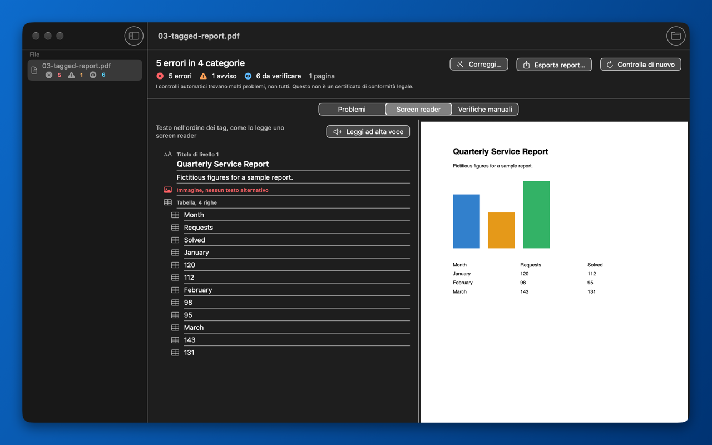
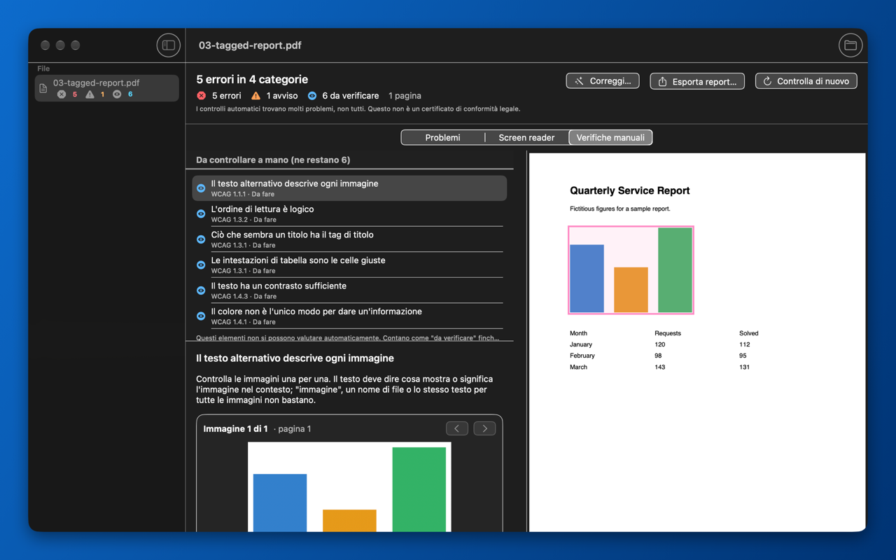

PDF Accessibility Checker per Mac
Scopri se un PDF può essere letto da chi usa uno screen reader, l’ingrandimento dello schermo o altre tecnologie assistive. L’app controlla il file sul tuo Mac, spiega ogni problema in parole semplici e ti dice come correggerlo nel programma con cui hai creato il documento.
PDF Accessibility Checker sul Mac App Store

Cosa controlla l’app
PDF Accessibility Checker legge la struttura del PDF – i tag che dicono alle tecnologie assistive che cosa è un titolo, un elenco, una tabella o un’immagine – insieme ai metadati e al contenuto delle pagine. Cerca problemi come:
- tag assenti, o contenuto non collegato ai tag;
- titolo del documento mancante, o titolo non mostrato nella finestra;
- lingua del documento mancante, o lingua dichiarata diversa da quella del testo;
- immagini senza testo alternativo;
- titoli, elenchi e tabelle con una struttura errata;
- font non incorporati o testo che non si può ricondurre a Unicode;
- link, campi modulo e annotazioni senza descrizione;
- metadati XMP non validi e identificativo PDF/UA mancante.
Tre livelli di risultato
- Errore: un problema che impedisce ad alcune persone di usare il documento.
- Avviso: un problema che rende il documento più difficile da usare, o che molto probabilmente è sbagliato.
- Da verificare: qualcosa che un programma non può giudicare da solo. Quando l’app non è sicura, non segnala mai che va tutto bene: ti chiede di guardare.
Vista screen reader
Vedi il testo nell’ordine dei tag, come lo legge uno screen reader: i titoli con il loro livello, gli elenchi, le tabelle e il testo alternativo delle immagini (o un avviso chiaro quando manca). L’app può anche leggere il testo ad alta voce.

Verifiche manuali guidate
Alcune cose può deciderle solo una persona: se il testo alternativo descrive davvero l’immagine, se l’ordine di lettura ha senso, se il contrasto è sufficiente, se il colore è l’unico modo per dare un’informazione. La vista Verifiche manuali ti guida una voce alla volta e mostra le immagini una per una, così puoi confrontare ciascuna con la sua descrizione.

Gratis e Pro
| Funzione | Gratis | Pro |
|---|---|---|
| Controllo completo di un file alla volta, con tutti i problemi e le spiegazioni | Sì | Sì |
| Vista screen reader e verifiche manuali guidate | Sì | Sì |
| Controllo in blocco di più file e di intere cartelle, con riepilogo | No | Sì |
| Correzioni automatiche, salvate in un nuovo file | No | Sì |
| Esportazione del report come PDF accessibile con tag e come CSV | No | Sì |
| Azione rapida del Finder “Controlla accessibilità” | Un PDF alla volta | Anche più file e cartelle |
Pro è un acquisto in-app una tantum da 49,99 USD (l’App Store mostra il prezzo in euro o nella tua valuta). Nessun abbonamento.
Correzioni automatiche in Pro
Le correzioni sono sempre salvate in un nuovo file chiamato nome-accessible.pdf accanto all’originale, mai sopra di esso. Il nuovo file viene poi controllato di nuovo, così vedi che cosa è cambiato. L’app può:
- impostare la lingua del documento, proponendola dal testo con il framework NaturalLanguage di Apple;
- impostare il titolo del documento e farlo mostrare nella finestra (DisplayDocTitle);
- riparare metadati XMP non validi;
- rimuovere autore e metadati del documento, sovrascrivendo i vecchi valori dove il file lo consente.
I problemi della struttura vera e propria – tag mancanti, immagini senza testo alternativo, ordine di lettura sbagliato – vanno corretti nel documento di origine o in un editor PDF. Per ciascuno l’app spiega come farlo in Microsoft Word, Pages e Adobe InDesign.
Privacy prima di tutto
- Funziona offline, interamente sul tuo Mac.
- Nessun account, nessuna raccolta di dati, nessuna statistica d’uso. Leggi l’informativa sulla privacy.
- Richiede macOS 14 o successivo.
- Disponibile in italiano, inglese, tedesco, francese e spagnolo.